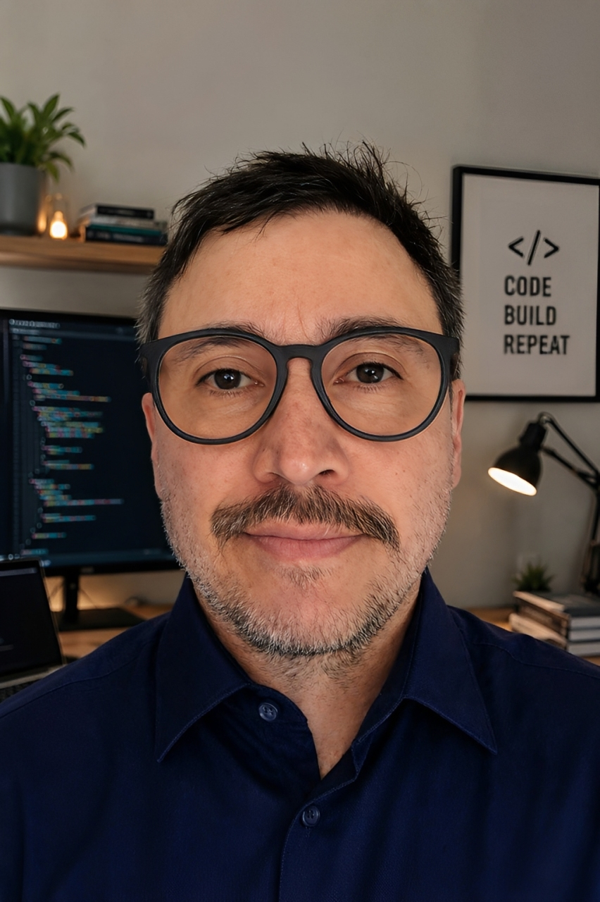
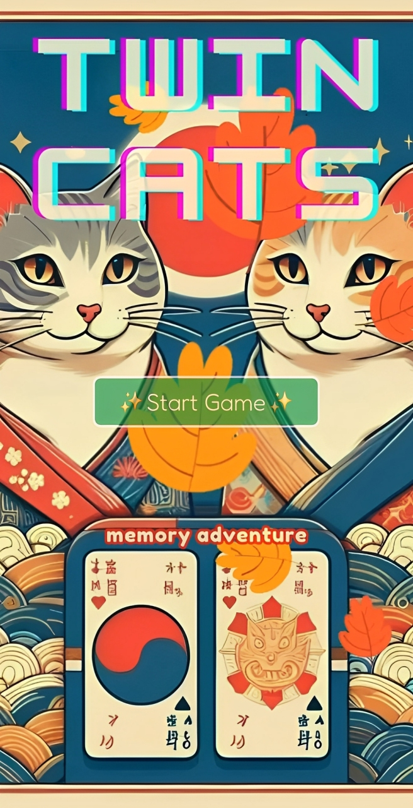
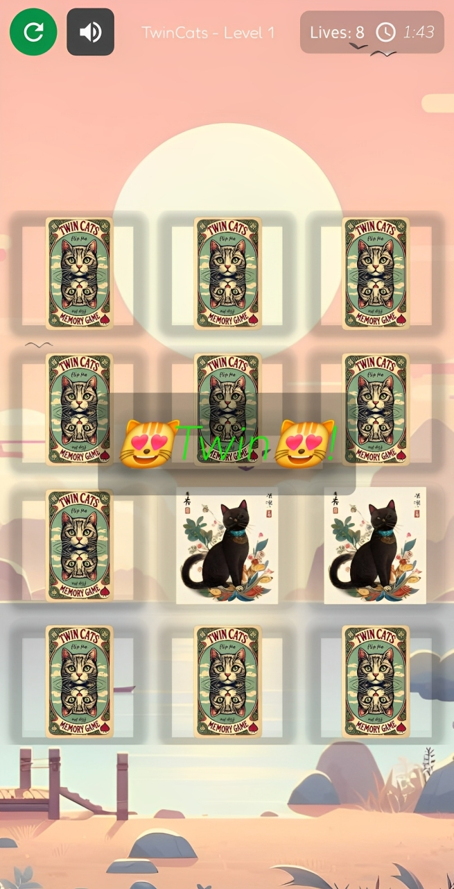

Java Backend Engineer | Spring Boot, Microservices, Docker & CI/CD
I'm a Java Backend Engineer with 3+ years of experience building and operating production-grade services in distributed, cloud-native environments. I own the full delivery lifecycle — from RESTful APIs and microservices to CI/CD pipelines, containerized deployments, and production observability.
My core stack is Java and Spring Boot, with hands-on experience in Docker, Kubernetes, PostgreSQL, and event-driven architectures. I thrive in remote-first teams that value autonomy, clean code, and continuous improvement.
I also publish Android games on Google Play in my spare time — because I enjoy building products end-to-end.
Java Backend Engineer — Baseform (Aug 2025 – Jan 2026)
• Owned Spring Boot backend services supporting client-facing operations.
• Built REST APIs integrated with external client systems, reducing manual operational effort.
• Resolved 10+ critical production incidents through monitoring, debugging and root-cause analysis, helping stabilize delivery.
Software Developer — Critical TechWorks / BMW (Jan 2024 – Jan 2025)
• Delivered backend APIs and integrations for BMW’s next-gen infotainment platform.
• Improved maintainability and reliability through clean code, performance profiling, and automated testing.
• Collaborated with product and platform engineers to ship incremental features in a safety-critical environment.
Software Integration Developer — Nokia (Oct 2022 – Oct 2023)
• Reduced deployment time by ~30% through CI/CD automation and Docker.
• Automated CI/CD workflows with Jenkins, GitLab, Docker, and Shell scripting.
• Supported 5+ project workflows on Nokia FlowOne, improving delivery consistency.
Production-ready REST API built with Java 21 and Spring Boot 3. Demonstrates solid engineering practices: manual caching (ConcurrentHashMap), streaming CSV/JSON processing (memory-efficient for large files), custom sorting, SQL JOIN demos, and 80%+ test coverage with JaCoCo.
Java 21 · Spring Boot 3 · Maven · JUnit 5 · JaCoCo · H2
View on GitHub → Full README with architectureProduction Android game (4.8★) published on Google Play. End-to-end ownership: design, development, Firebase integration, AdMob, and CI/CD pipeline for automated deployment. Demonstrates full product lifecycle management.
Kotlin · Jetpack Compose · Firebase · Google Play Console


📍 Lisbon, Portugal